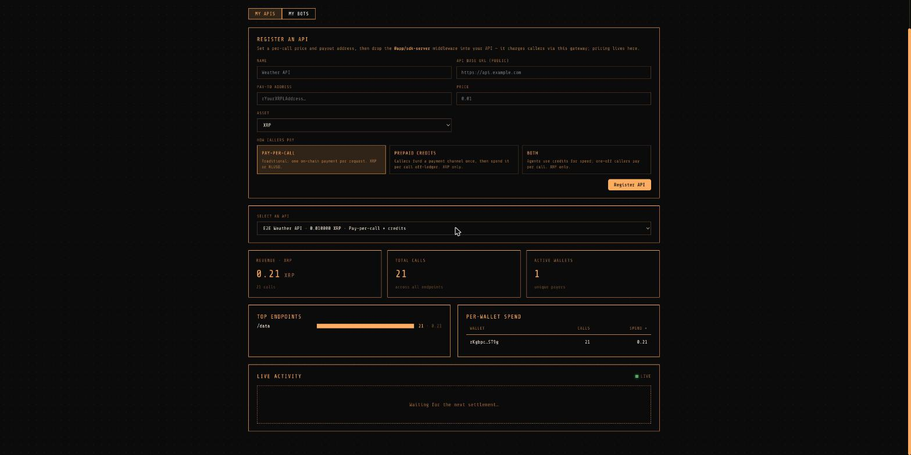

Usage & test guide: charge per API call in XRP or RLUSD over HTTP 402, verified end to end on XRPL testnet.
The gateway lets any HTTP API charge per call using the
x402 protocol (HTTP 402 Payment Required), settling in
XRP or RLUSD on the XRP Ledger. It is a faithful XRPL port
of Coinbase's x402: the gateway acts as the facilitator (issuing challenges,
verifying and settling payments) while a one-line middleware in the seller's own server
enforces payment on the seller's routes.
You own an API and want revenue per request with no payment processor. Sign in with an
XRPL wallet, register the API (name, price, payout address), drop the
@app/sdk-server middleware into your server, and watch revenue live on the
dashboard.
You run an AI agent (or any client) that cannot sign up for Stripe but can hold an XRPL
wallet. x402fetch makes a request, hits a 402, pays it, and retries
automatically: one function call per paid request.
GET /data on the seller's API.accepts[] (price, payTo, single-use nonce).
X-PAYMENT header.
/settle. The
gateway verifies against the ledger, consumes the nonce, records usage.
X-PAYMENT-RESPONSE (settlement proof, explorer link for on-chain payments).
Every gateway-submitted transaction is stamped with your team source tag, so on-chain activity counts toward the XRPL Commons leaderboard.
Prerequisites: Node ≥ 20, pnpm, and Docker (for Postgres + Redis).
pnpm install
cp .env.example .env # then edit values if needed
make up # start Postgres + Redis (docker compose)
pnpm demo # full testnet demo, end to end
pnpm demo builds everything, applies migrations, faucet-funds three fresh
testnet wallets (gateway, agent, seller), boots the gateway (:8402), dashboard
(:5173) and a demo seller API (:8403), registers the seller, then
runs the agent: open one payment channel, make 20 off-ledger metered calls,
then one pay-per-call that settles on chain and prints the explorer URL.
Servers stay up afterwards; the console prints a
pre-authenticated dashboard URL so you can watch the live feed without a
wallet extension. Ctrl-C tears it down.
Open the dashboard at http://localhost:5173. Auth is sign-in-with-XRPL: connect
a browser wallet (GemWallet and Crossmark work with zero config; Xaman and WalletConnect
need API keys in .env) and sign a one-time challenge. No transaction is
submitted and no fee is charged; the wallet only proves address ownership. The signed
challenge is exchanged for a 12-hour bearer session token.
On the My APIs tab, fill in name, public base URL, pay-to address, price, asset, and how callers pay:

The dashboard right after the verified test run below: 0.21 XRP revenue across 21 calls from one agent wallet, with the live settlement feed connected.
Pricing lives in the gateway registration, so middleware config is just two values:
// Fastify
import { x402Fastify } from '@app/sdk-server';
const pay = x402Fastify({ gatewayUrl: 'http://localhost:8402', sellerId });
app.get('/premium', { preHandler: pay }, async () => ({ secret: 42 }));
// Express: app.get('/premium', x402Express({ gatewayUrl, sellerId }), handler)Because payment is enforced inside your own server, there is no separate unmetered origin URL to leak or bypass. The middleware holds no XRPL or pricing logic; it delegates every x402 decision to the gateway.
POST /channels/:id/redeem (owner only). The
seller's cut is then forwarded to your pay-to address as a durable, retried payout.
.env plus run command. The bot's seed
stays with you; the gateway stores only the public address.
import { Client, Wallet } from 'xrpl';
import { x402fetch } from '@app/sdk-client';
const client = new Client('wss://s.altnet.rippletest.net:51233');
const wallet = Wallet.fromSeed(process.env.AGENT_SEED);
const res = await x402fetch('http://localhost:8403/data', {
x402: {
wallet, client,
sourceTag: 1080108,
maxAmount: { XRP: '0.05' }, // refuse anything pricier
},
});
// 402 handled, payment made, request retried: res is the real API response.
console.log(res.headers.get('x-payment-response')); // settlement proof
Open one channel to the seller's channelDestination (from the public
GET /sellers/:id), register it, and pass it to every call. Each call is then an
off-ledger signed claim: no per-call on-chain wait.
import { openChannel, x402fetch } from '@app/sdk-client';
const info = await (await fetch(`${gateway}/sellers/${sellerId}`)).json();
const channel = await openChannel({
client, wallet,
destination: info.channelDestination, // the gateway wallet
deposit: '1', // XRP locked as credits
sourceTag: 1080108,
});
await fetch(`${gateway}/channels`, { // register: gateway trusts the LEDGER, not you
method: 'POST',
headers: { 'content-type': 'application/json' },
body: JSON.stringify({ channelId: channel.channelId, sellerId, walletAddress: wallet.classicAddress }),
});
for (let i = 0; i < 20; i++) {
await x402fetch(resourceUrl, { x402: { wallet, client, sourceTag: 1080108, channel } });
}Plan around two PayChan realities: a channel is per (payer, seller) and locks capital up front, so the first call to a new seller costs a channel open or a pay-per-call. And credits are XRP-only (PayChan is XRP-native); RLUSD pricing settles via pay-per-call only.
| Pay-per-call | Prepaid credits (PayChan) | |
|---|---|---|
| Assets | XRP or RLUSD | XRP only |
| Per-call latency | One ledger round-trip (~4s) | Off-ledger, milliseconds |
| On-chain txs | One per call | One channel open + one redeem for many calls |
| Best for | One-off callers, stable-unit (RLUSD) pricing | Agents making many calls to one seller |
| Safety rails | Single-use nonce, exact tx verification against the ledger | Monotonic signed claims, ledger-read keys, SettleDelay/CancelAfter guards, auto-redeem before expiry |
| Endpoint | Auth | Purpose |
|---|---|---|
POST /auth/challenge |
none · 30/min per IP | Issue a sign-in challenge for an address (keyed per address + nonce) |
POST /auth/verify · /auth/verify-tx |
none · 30/min per IP | Exchange the signed challenge (message or tx blob) + nonce for a session token |
POST /sellers · GET /sellers |
bearer | Register / list your APIs |
GET /sellers/:id |
none | Public seller info: price, payTo, channelDestination |
GET /catalog |
none | Public service registry: every registered API as JSON, for agent discovery (rendered on the dashboard landing page for humans) |
POST /challenge |
none · 600/min per IP | Facilitator: issue a single-use 402 challenge for (seller, resource) |
POST /settle |
none | x402 facilitator settle: verify + consume a payment (spec SettlementResponse) |
POST /verify |
none | x402 facilitator verify without consuming (spec VerifyResponse) |
GET /supported |
none | x402 facilitator capability listing: supported (scheme, network) kinds |
POST /channels |
none · 60/min per IP | Register a payment channel (destination, deposit, key are read from the ledger) |
POST /channels/:id/redeem |
bearer, owner only | Redeem accumulated claims on chain; queues the seller payout |
GET /usage/summary · /top-endpoints · /by-wallet |
bearer, owner only | Revenue, calls, active wallets, per-endpoint and per-wallet breakdowns |
GET /usage/stream |
token in query, owner only | SSE live settlement feed |
POST /bots · GET /bots/:id/config |
bearer | Save a bot config; download its runnable .env |
GET /health |
none | Liveness probe |
This exact flow was executed against XRPL testnet on 2026-07-17 with the real gateway, real middleware, and the real agent. All 21 checks passed; the on-chain transactions are publicly visible:
gateway /health responds
admin sign-in issues a session token (sign-in-with-XRPL)
verify with a wrong nonce is rejected 401
admin registers a seller (price 0.01 XRP, setup BOTH)
seller list requires auth; public lookup exposes channelDestination
usage starts at zero; another wallet reading your usage gets 404
facilitator /challenge returns both accepts[] modes
settle with a fake tx hash is REJECTED
auth endpoints rate limit (429)
unpaid request to the seller API answers 402 with accepts[]
agent opens a 1 XRP channel, makes 20 off-ledger calls (200 each)
one pay-per-call settles on chain · Payment tx
usage shows 21 calls / 0.21 XRP; SSE feed streamed all 21 settlements
manual redeem claims 0.2 XRP on chain · PaymentChannelClaim tx
seller payout recorded and PAID on chain (0.2 XRP forwarded)
a non-owner cannot redeem the channel (403)
every gateway-submitted tx carries the source tag
pnpm demo (needs Docker). Expect the agent log to
end with an explorer link and the dashboard URL.
$SELLER and
$TOKEN from the demo output):
curl -s localhost:8402/health
curl -s -X POST localhost:8402/challenge -H 'content-type: application/json' \
-d '{"sellerId":"'$SELLER'","resource":"/data"}' # 402 requirements
curl -s localhost:8403/data # 402 from the seller API
curl -s "localhost:8402/usage/summary?sellerId=$SELLER" \
-H "authorization: Bearer $TOKEN" # revenue + calls
curl -s -X POST localhost:8402/channels/$CHANNEL/redeem \
-H "authorization: Bearer $TOKEN" # on-chain redeempnpm audit:source-tag exits non-zero if
any gateway-submitted tx is missing the configured tag.
#token= URL, confirm revenue
tiles, per-wallet spend, and the LIVE feed pulse as calls land.
XRPL_NETWORK=MAINNET, a funded
GATEWAY_XRPL_SEED, and the mainnet RLUSD_ISSUER.
TRUST_PROXY=true so per-IP rate limits
key on the real client address.
| Symptom | Likely cause / fix |
|---|---|
make up fails to connect to Docker |
Docker Desktop is not running; start it and retry. Postgres and Redis must be
reachable before pnpm demo.
|
| Faucet funding hangs | Testnet faucet is flaky under load; re-run the demo. |
429 too many requests |
Per-IP rate limit (auth 30/min, challenge 600/min, registration 60/min). Wait a minute
or set TRUST_PROXY correctly behind a proxy.
|
challenge has expired |
Challenges live 5 minutes; request a fresh 402 and pay that nonce. |
channel ledger state does not match... |
The on-ledger channel diverged from registered state (e.g. balance moved outside the gateway). Wait one maintenance sweep for reconciliation, or open a fresh channel. |
channel is at or near its expiry |
By design: claims stop being honored near CancelAfter so delivered value can be redeemed first. Open a new channel. |
| 402 keeps coming back to the agent |
Check maxAmount ceiling vs the seller price, the wallet balance, and that
payload.payer matches the paying wallet.
|